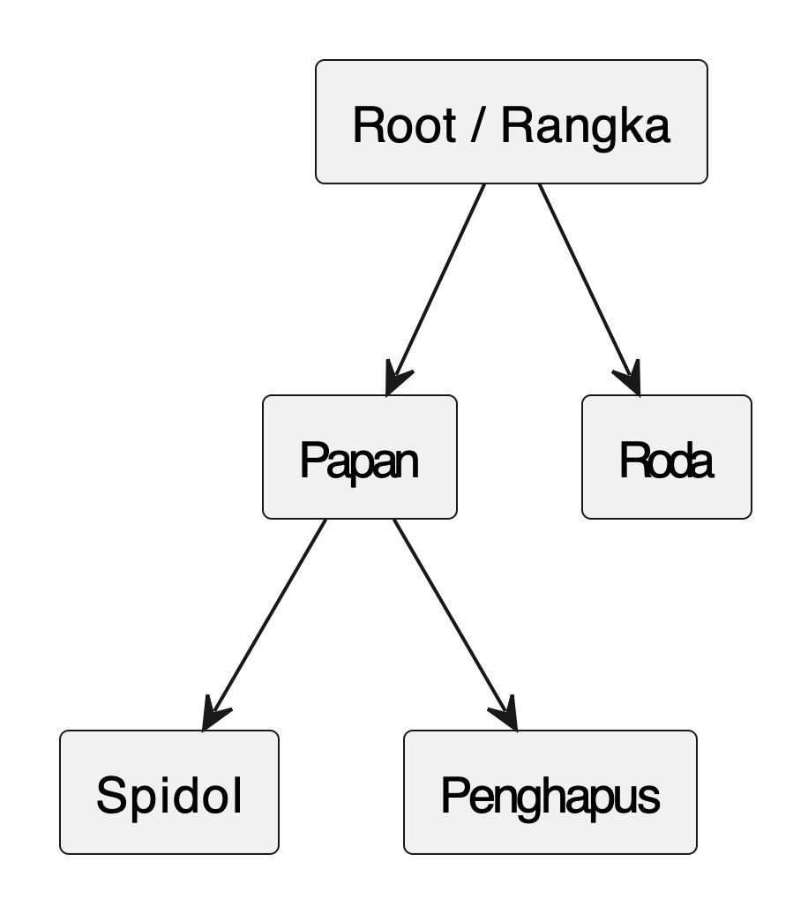
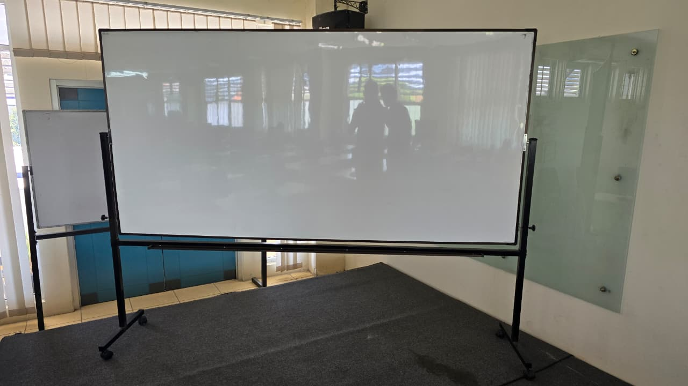
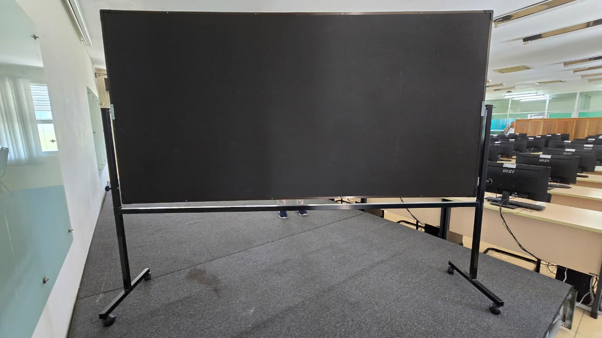

Anggota Kelompok
- Felda Ega Fadhila (NRP: 5025231199)
- Naswan Nashir Ramadhan (NRP: 5025231246)
Kontrol Interaksi
Skala (Dilatasi)
Horizontal: Vertikal:
Tips:
Gunakan WASD untuk rotasi
Gunakan Tombol Panah untuk menggeser
Scroll atau +/- untuk zoom
Kontrol Pencahayaan
Posisi Cahaya
X:
Y:
Z:
Warna Cahaya
Ambient:
Diffuse:
Specular:
Material
Shininess:
Warna Frame
Pilih Warna:
Kontrol Tekstur
Pilih Tekstur Papan:Interaksi Cahaya & Tekstur:
Kontrol Animasi
Hierarchical Modelling
Foto Referensi
 Video Referensi
Video 1 — Memutar Papan.
Video 2 — Tulisan Dihapus.
Video 3 — Menulis di Papan.
Video 4 — Seluruh Papan bisa Bergerak.
Pembagian Tugas Proyek
Berikut adalah pembagian tugas inti untuk kelompok kami:
Felda Ega Fadhila: Pengembang Geometri & Animasi Inti
Fokus utama adalah pada mekanika pergerakan objek 3D di dalam scene, termasuk bagaimana objek-objek tersebut bertransformasi dan berinteraksi satu sama lain.
-
Pembuatan Objek (Modelling):
- Membangun semua objek 3D utama (papan, bingkai, rangka penopang, roda, spidol, penghapus, alas).
- Memastikan hierarki objek (misalnya, roda terhubung ke rangka, spidol/penghapus ke papan) berfungsi dengan benar.
-
Animasi & Pergerakan:
- Mengimplementasikan logika untuk rotasi global papan tulis dan seluruh scene (menggunakan `rotationAngles` dari input WASD dan mouse drag).
- Mengimplementasikan logika untuk rotasi papan tulis saja (`boardOnlyRotationAngle` dari input WASD dan mouse drag).
- Mengimplementasikan logika untuk translasi/geser papan tulis (`translationOffsets` dari tombol panah).
- Mengimplementasikan logika untuk zoom (zoomFactor dari scroll mouse dan tombol +/-).
- Mengimplementasikan logika untuk rotasi otomatis seluruh scene dan papan tulis (`isAutoRotating`).
-
Animasi Objek Spesifik:
- Mengembangkan jalur pergerakan dan transformasi spidol selama animasi menggambar (menentukan `animX`, `animY`, `animZ` spidol, serta rotasi spidol agar ujungnya menunjuk ke papan).
- Mengembangkan jalur pergerakan dan transformasi penghapus selama animasi menghapus.
- Mengimplementasikan mekanika putaran roda (`wheelRotationAngle`) yang disinkronkan dengan pergerakan maju/mundur papan tulis (`translationOffsets.z`).
-
Orkestrasi Animasi Showcase:
- Mendefinisikan urutan, waktu, dan jenis pergerakan untuk setiap tahap dalam animasi showcase (`showcaseStage`, `showcaseTime`). Ini termasuk mengkoordinasikan perubahan `rotationAngles`, `translationOffsets`, `boardOnlyRotationAngle`, `wheelRotationAngle`, dan memicu `isDrawingAnimation`/`isErasingAnimation` pada waktu yang tepat.
Nashwan Nashir Ramadhan: Pengembang Visual & Interaksi UI
Fokus utama adalah pada efek visual animasi dan bagaimana pengguna dapat mengontrolnya melalui antarmuka.
-
Pencahayaan (Lighting):
- Mengimplementasikan model pencahayaan (Phong Shading) di shader.
- Mengatur posisi dan properti cahaya (warna ambient, diffuse, specular, shininess).
- Mengimplementasikan kontrol UI untuk semua pengaturan pencahayaan.
-
Tekstur (Texturing):
- Mengimplementasikan semua jenis tekstur (polos, teks, catur, gambar) dan penerapannya pada objek.
- Mengimplementasikan Frame Buffer Object (FBO) untuk fitur menggambar dan menghapus di papan tulis.
- Mengimplementasikan kontrol UI untuk pemilihan tekstur dan mode tekstur.
-
Antarmuka Pengguna (UI) & Kontrol:
- Merancang dan menyusun `index.html` untuk semua kontrol.
- Mengimplementasikan semua event listeners untuk tombol, slider, dan dropdown yang mengontrol scene (reset, rotasi, proyeksi, skala, visibilitas alas, dll.).
-
Animasi Efek Visual:
- Mengimplementasikan logika untuk gerak cahaya otomatis (`isLightAutoMoving`, `lightAnimationTime`), termasuk pembaruan posisi cahaya di UI.
- Mengimplementasikan logika untuk RGB cycling warna frame (`isFrameRgbCycling`, `frameRgbTime`), termasuk pembaruan warna di UI.
- Bertanggung jawab atas implementasi fungsi `drawOnBoard` yang sebenarnya melakukan rendering "tinta" atau "penghapusan" ke Frame Buffer Object (FBO).